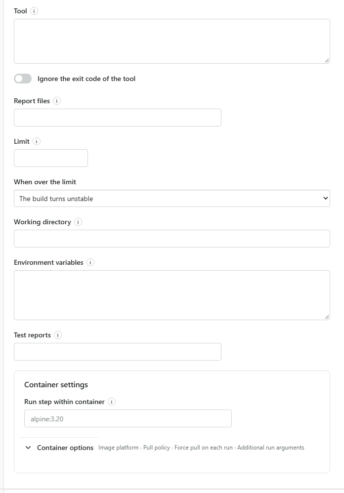

Code Inspections
Runs an analysis tool of your own, or reads reports an earlier step wrote (SARIF, Checkstyle, PMD, SpotBugs), and lists the issues on the build.
When to use it
Use it when your analysis tool already writes a standard report. You get the issues on the build page without a special plugin. The step keeps only path, line, rule and message, never source text.
How to set it up
- Open the build configuration and click Settings › Build Steps.
- Click Add build step. Type
Code Inspectionsin Filter step types if you like, then click the Code Inspections tile (group Code quality and coverage). - Type a Step name, for example
Inspections. - Fill in the fields described below.
- Optional: set Execute step, Conditions and Retry on failure. See The steps list and the step editor.
- Click Save.

Every field
| Field | What it does | Default | Example |
|---|---|---|---|
| Tool | Optional. The tool first, then its arguments, one per line. Each line stays one argument. Leave empty to only read reports an earlier step wrote. | Empty | pmd then check |
| Ignore the exit code of the tool | Many tools exit with a number other than 0 when they find issues. Tick this to keep going and read the report anyway. | Off | On |
| Report files | An Ant pattern of report files inside the workspace. SARIF, Checkstyle, PMD and SpotBugs XML are recognised by their content. A path that leaves the workspace is refused. | Empty | **/checkstyle-result.xml,**/*.sarif |
| Limit | Optional. The step is worse when it finds more issues than this number. Empty means no limit. | Empty | 0 |
| When over the limit | The build turns unstable or The step fails. | The build turns unstable | The step fails |
| Working directory, Environment variables, Test reports, Run step within container | The same in every runner. See Fields every runner has. |
A worked example
Read the SARIF report that the C++ analyser wrote in an earlier step. Step name Inspections, leave Tool empty, Report files build/analysis/*.sarif, Limit 0, When over the limit The step fails.
What you see when it runs
The console says Read build/analysis/engine.sarif as SARIF. and Found 14 issues. The build page has a Code Inspections page with the issue counts and the list. Over the limit: Found 14 issues, more than the limit of 0.
Problems and fixes
| Problem | What to do |
|---|---|
| No report was read. Pattern: … | Check the pattern and that the earlier step wrote the file. |
| A report pattern must stay inside the workspace | Remove absolute paths, drive letters, ~ and ... |
| More than N report files matched | Narrow the pattern. |
| The report … is larger than N MB and is not read | Write a smaller report, or split it. |
| The inspection tool was not found on this agent | Install the tool or put it on the PATH. |